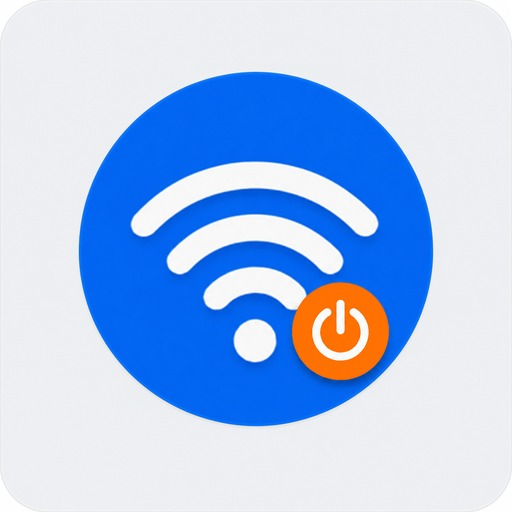
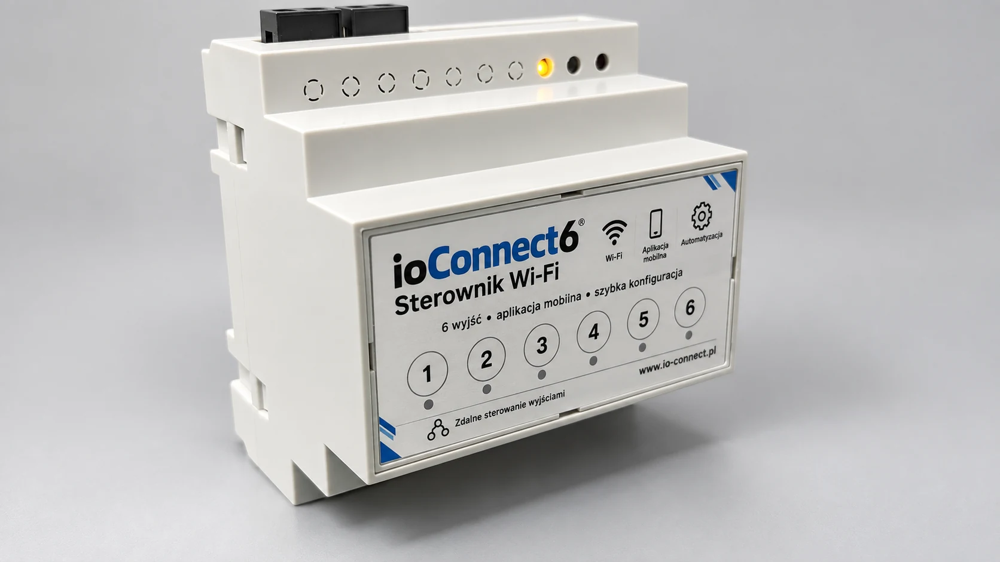
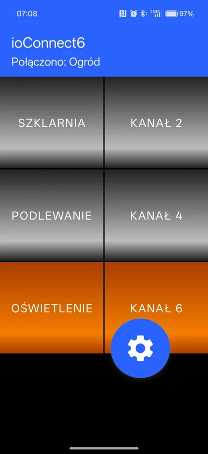

6 niezależnych wyjść
Każdym kanałem można sterować osobno z głównego ekranu aplikacji.

ioConnect6STEROWNIK WI‑FI • 6 WYJŚĆ • 6 WEJŚĆ
ioConnect6 pozwala sterować sześcioma wyjściami z aplikacji oraz korzystać z sześciu wejść. Do tego harmonogramy, konfiguracja przez Wi‑Fi i aktualizacje firmware bez programatora.
Aplikacja dla Androida. Sterownik pracuje lokalnie w swojej sieci Wi‑Fi.

URZĄDZENIE
ioConnect6 jest sterownikiem do montażu w rozdzielnicy. Aplikacja służy do obsługi i konfiguracji, ale 6 wejść pozwalają zachować normalne sterowanie na miejscu.

MOŻLIWOŚCI
Każdym kanałem można sterować osobno z głównego ekranu aplikacji.
Sterowanie lokalne może działać z przycisków lub przełączników podłączonych do sterownika.
Reguły czasowe pozwalają automatyzować przełączanie wybranych wyjść.
Pierwsze uruchomienie i dołączanie kolejnego telefonu są prowadzone przez aplikację.
Sterownik i kanały mogą mieć krótkie nazwy odpowiadające rzeczywistej instalacji.
Nowe firmware można wgrywać z aplikacji, bez podłączania programatora.
APLIKACJA ANDROID
Aplikacja ioConnect6 pokazuje stan kanałów, umożliwia szybkie sterowanie, zmianę nazw wyjść, dodawanie kolejnych telefonów i aktualizacje firmware OTA.

Sześć kanałów dostępnych od razu po połączeniu ze sterownikiem.

Menu prowadzi do ustawień, kalendarza, paneli i funkcji administracyjnych.

Wyjścia można opisać zgodnie z rzeczywistą instalacją, np. szklarnią, podlewaniem lub oświetleniem.

Sprawdzenie wersji i aktualizacja firmware odbywają się z poziomu aplikacji, bez programatora.
URUCHOMIENIE
POBIERANIE
Najnowsza opublikowana wersja aplikacji jest dostępna do pobrania jako APK.